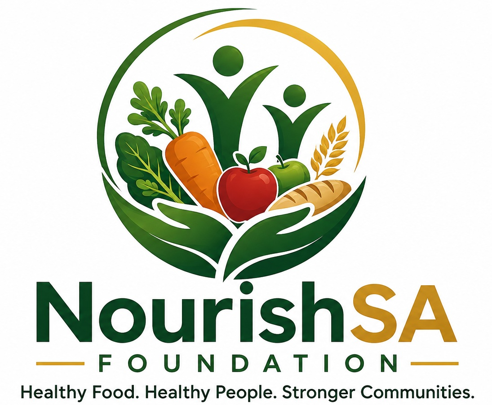

NourishSA Foundation works to improve food security, nutrition and community wellbeing through nutritious food assistance, food rescue, education and sustainable food-growing initiatives.

NourishSA Foundation aims to provide nutritious food today while helping communities become healthier and more food-secure tomorrow.
We combine food assistance with practical nutrition education, food rescue, school and child support and community-based food-growing initiatives.
Every person receiving support deserves respectful and humane treatment.
Food assistance should focus on nutritional value and not simply quantity.
Resources should be managed responsibly, ethically and transparently.
Long-term food security requires education, partnerships and community food production.
Nutritious food parcels developed around household needs and improved nutritional balance.
School meals, healthy snacks, weekend food packs, nutrition education and support for vulnerable children and families.
Community, school and household vegetable gardens supported by practical growing, composting and sustainability education.
Responsible recovery and redistribution of suitable surplus food from farmers, retailers, restaurants, wholesalers and food-sector partners.
Practical nutrition education covering healthy meals, food hygiene, food labels, meal planning and household food budgeting.
NourishSA Foundation seeks to work with businesses, humanitarian organisations, development agencies, community structures and international funders whose objectives align with food security, nutrition and sustainable community development.
The work of organisations such as Gift of the Givers Foundation provides an important South African benchmark in humanitarian relief, emergency assistance and community-based support.
NourishSA aims to build operational standards reflecting dignity, responsiveness and community service.
NourishSA recognises international development agencies such as the Swedish International Development Cooperation Agency (Sida) as examples of institutions active in sustainable development and international cooperation.
Future funding initiatives may seek support from suitable international development programmes, foundations and grant-making institutions.
Help support food parcels, children's nutrition, community gardens and food-health education.
Support NourishSAAssist with food packing, distribution, community gardens, events and programme activities.
VolunteerBusinesses and organisations can contribute food, funding, transport, expertise or programme support.
Partner With UsSupport can strengthen nutritious food assistance, children's programmes, community gardens, nutrition education and responsible food-rescue initiatives.
Contact NourishSAIndividuals, businesses and organisations can support NourishSA through food donations, programme sponsorship, volunteering, transport, expertise and community partnerships.
Website
www.nourishsas.com
Telephone
076 923 9095
Contact NourishSA Foundation regarding food assistance, donations, volunteering, corporate partnerships, community programmes and food-rescue opportunities.
Contact NourishSA if you would like to:
Telephone
076 923 9095
Website
www.nourishsas.com
NPO Registration
439-518 NPO